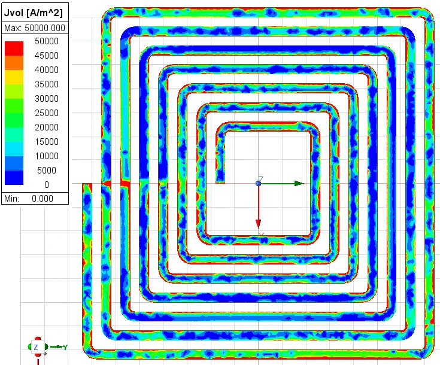

Research / University of Washington
High frequency.
Hands-on research.
Graduate Research Assistant at the HiPER lab, April 2026-present. Investigating how geometry, resonance and motion shape wireless power transfer.
01 / Experimental systems
6.78 MHz dynamic
wireless power
My work connects electromagnetic frame-coupling analysis, copper coil fabrication, VNA characterization and a custom motorized receiver platform.
I designed and assembled the motion platform and integrated it with existing inverter and rectifier hardware. Experimental power and efficiency testing was collaborative.
Read the full case study →

02 / Ongoing modeling
Rectangular
self-resonant coils
Capacitor heating and voltage limits motivated an investigation of distributed and inter-coil capacitance as an alternative to external series compensation.
I developed HFSS coil models and compared simulated inductance with Mohan's Modified Wheeler and Current Sheet approximations. Geometry studies examine inductance, ESR, Q and current distribution.
Python-based geometry optimization is in development. Final optimized geometry, experimentally validated improvements and publication outcomes are not yet established.
